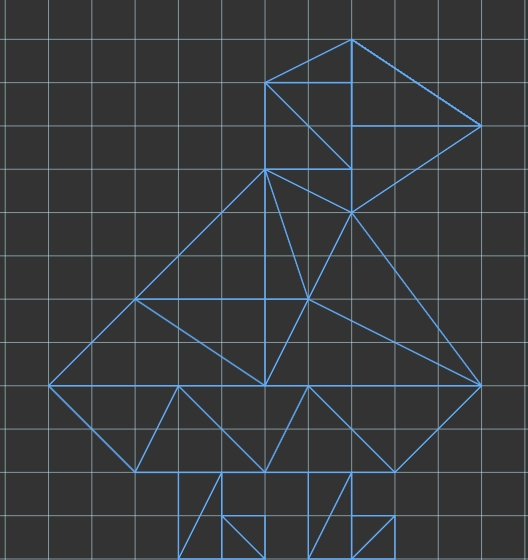

Perry Lin
plin32@ucsc.edu
Note to Grader:
My awesomeness feature can be found using the "Randomized" switches.
Each switch randomizes their respective feature, allowing for the user
to create colorful and interesting drawings.
